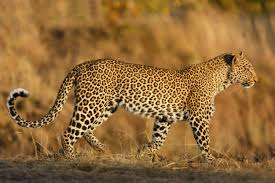
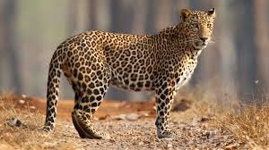
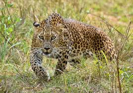
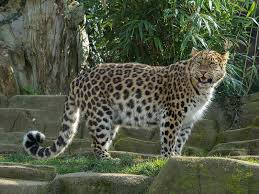
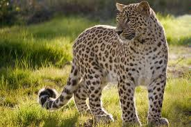
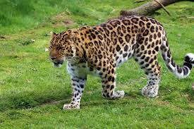
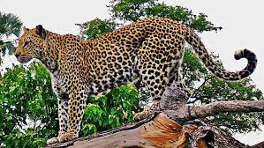
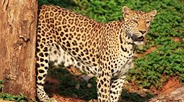
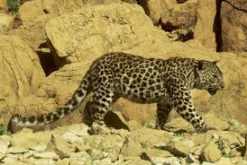

Leopard is a cat species from the genus Panthera. The name "leopard" comes from the Latin word "leopardus". Leopardus is a compound of 'leo', which means 'lion', and 'pardus' means 'spotted'. That word represents the meaning "Spotted lion". Its fur is yellowish to dark golden with dark spots grouped in rosettes. The leopard has a muscular and slender body with a length of 92 - 183 cm.
Let's see how a leopard roar.
Leopard Roar Leopard GrowlThere are nine subspecies of leopard in the world. They are:
Amomg these subspecies, Persian leopard is the largest species in the world while the Arabian leopard is the smallest subspecies.
Here's a video showcasing some of the Leopard subspecies:
| Image | Name of the subspecies | Living Area |
|---|---|---|
|  | African leopard (anthera pardus pardus) | Zambia, Botswana, South Africa, Tanzania, Kenya |
|  | Indian leopard (Panthera pardus fusca) | India, Nepal, Bhutan and Pakistan (only in some parts in Pakistan) |
|  | Sri Lankan leopard (Panthera pardus kotiya) | Sri Lanka |
|  | Amur leopard (Panthera pardus orientalis) | North Korea, between Russian far east and north-east China |
|  | Persian leopard (Panthera pardus tulliana) | Afghanistan, Russia, Armenia, Azerbeijan, Pakistan, Turkey, Iran, and Turkmenistan |
|  | North China leopard (Panthera pardus japonensis) | Northern China |
|  | Javan leopard (Panthera pardus melas) | Java island (Indonesia) |
|  | Indochinese leopard (Panthera pardus delacouri) | Thailand, Malaysia, Southern China, Myanmar, and Cambodia |
|  | Arabian leopard (Panthera pardus nimr) | Yemen, Oman, and Saudi Arabia |
The following map represents the habitat of leopards.
In Africa, We can find leopards from:
Chobe National Park is known for its large elephant population, but it also has a healthy leopard population.
Find more.JPG)
There are 1000 leopards live in this national park.
Kruger National Park is one of South Africa's most famous and popular national parks, renowned for its diverse wildlife and stunning landscapes. It's home to a variety of animals, including elephants, lions, buffaloes, leopards, and rhinoceroses. The park also offers breathtaking views of the Sabie River and the Drakensberg Mountains.
Find more.JPG)
There are approximately 52 leopards live in this national park.
Masai Mara National Reserve is one of Kenya's most famous and popular national parks, renowned for its annual Great Migration of wildebeest and zebras. The reserve is also home to a variety of other animals, including lions, elephants, buffaloes, leopards, and giraffes.
Find moreThere are approximately 1000 leopards live in this national park.
Serengeti National Park is one of Tanzania's most famous and popular national parks, renowned for its annual Great Migration of wildebeest and zebras. The park is also home to a variety of other animals, including lions, elephants, buffaloes, leopards, and giraffes.
Find moreIn Asia, we can find leopards from:
.JPG)
There are 300 - 350 leopards in this national park.
Yala is home to a significant population of leopards, making it a prime destination for wildlife enthusiasts. These big cats can often be seen hunting, resting, or interacting with their surroundings.
There are around 800 leopards in Sri Lanka.
Find moreThere are approximately 66 - 105 leopards live in this national park.
Chitwan is a popular destination for wildlife safaris, and it is home to a variety of predators, including leopards.
Find moreThere are approximately 700 leopards live in this national park.
It is also renowned for its wild population of leopards, inhabiting the foothills of the Himalayas.
Leopards as referred to in India by the name Panthers can be rarely seen roaming in the sanctuary. However, the larger population mostly lies in the hilly areas of the Corbett.
Find more
There are around 80 Amur leopards in Northeast China Tiger and Leopard National Park.
Northeast China Tiger and Leopard National Park is a large national park located in the northeastern part of China, near the border with Russia. It's famous for its efforts to protect and restore populations of tigers and leopards, which were once critically endangered in the region.
Find moreLocated in the Primorsky Krai region, this park is known for its high density of Amur tigers and leopards. There are around 70 - 80 leopards live in this national park.
Find moreDo you need more clarification?